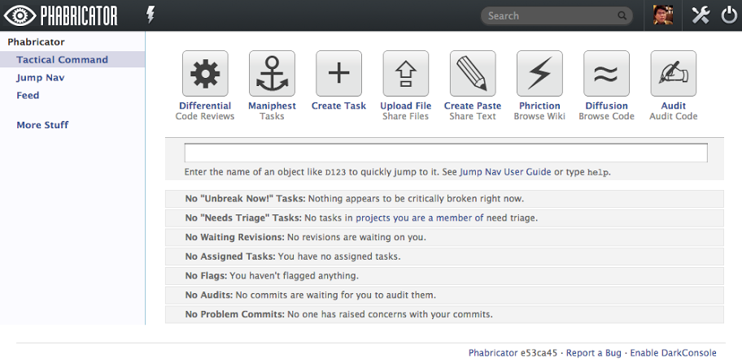

對 Phabricator 的第一印象就是很 social network，使用界面上也很有 Facebook 風格：

Phabricator 是 Facebook 內部的線上協作開發工具，今年夏天開源出來讓外界使用，有些新興的網路公司如 Dropbox 或 Quora 等也有在使用，不過 open-source project 方面似乎只看到 LLVM 及 WikiMedia 有要採用它來做 code review 工具。
Phabricator 由以下幾個主要功能組成：
- Differential 是 code review 工具，可以搭配 SVN, Mercurial, Git, 或是直接貼 plain-text diff 來做 pre-push 的代碼審查。
- Maniphest 用來做 defect tracking。
- Diffusion 可以線上瀏覽程式碼修改歷史。
- Phriction 是 Wiki 文件系統。
- 另外有些比較小的模組：
- Phame 個人部落格
- Ponder 線上 Q&A
- Herald 可以自定事件通知的處理方式
- Owner 協助幫忙找到任意原始碼的負責人
- Paste 可以張貼分享原始碼
- Showvote 可以辦投票活動
- Countdown 倒數計時器
- File 線上檔案分享
- Macro 有點惡搞的 image macro
- …
因為 Facebook 是從 PHP 起家的，從 Phabricator 這名字不難猜出來這系統也是用 PHP 開發的，連它搭配的 client 端工具 Arcanist 也是用 PHP 做的，一整個 PHP 到底。
講一下試用後的心得：
- Code review 的部分，Phabricator 支援 pre-push 的 review 及 post-push 的 code audit。Pre-push 的審查流程要求 dev 要先通過 linter 的檢查及完成相對應的 test plan，跟使用 Google Gerrit 再由 Jenkins 來自動驗證是類似的精神。Review 的單位可以是一個或是多個 commit，這比 Gerrit 相較比較有彈性，但操作過程比較繁複，個人比較喜歡 Gerrit 完成 review 後自動 submit 的做法。
- Maniphest 的 task 管理功能還蠻簡單易用不複雜，可以有 subtask，也可以設定 dependencies，也可以標 flag 及將 review 關聯上來。
- Diffusion 的代碼瀏覽功能蠻不錯的，所有改動的部分用 side-by-side diff 的排列一個頁面顯示完蠻清楚的，review comment 也是直接點擊編輯加上去。
- Phabricator 用的 text formatting 是 Remarkup，跟我慣用的 Markdown 或 Textile 大同小異，倒也說不上特別好或壞。
基本上小公司需要用到的線上協作功能都有了，如果沒有既有系統包袱的團隊建議可以試用看看。